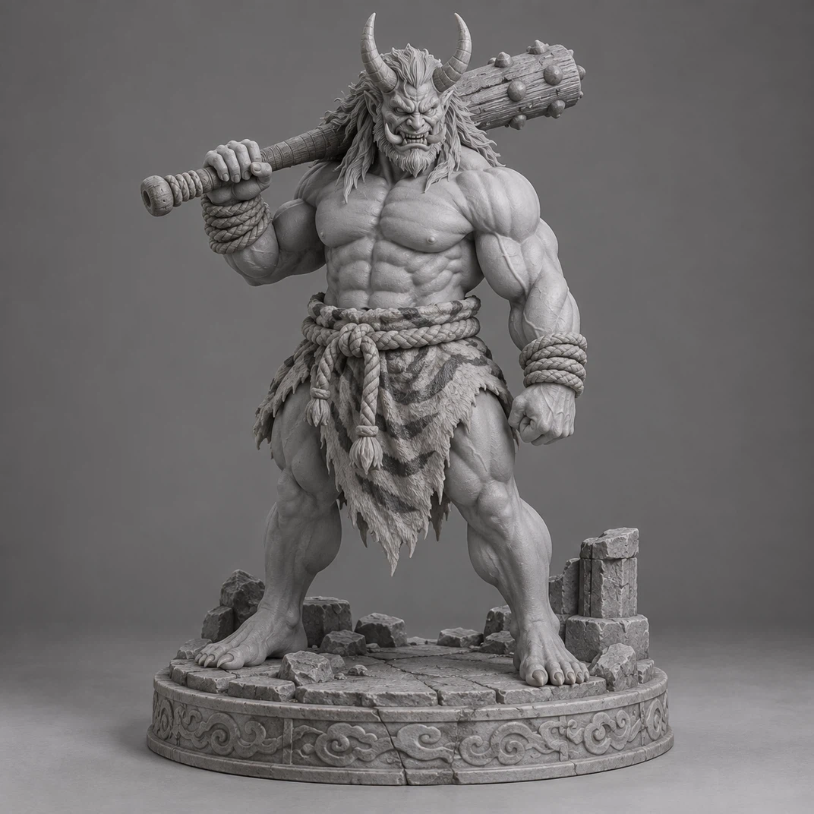
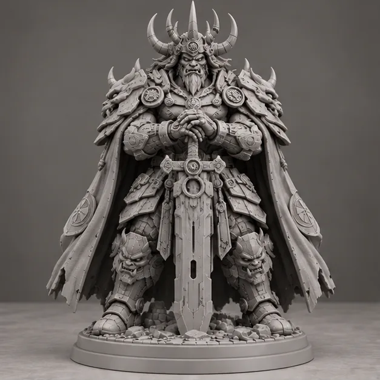
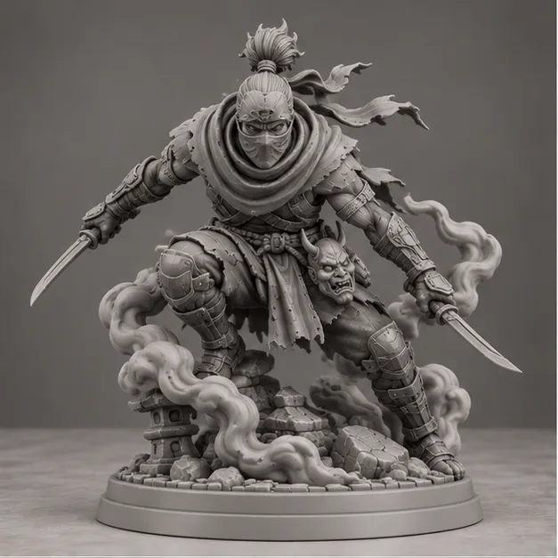
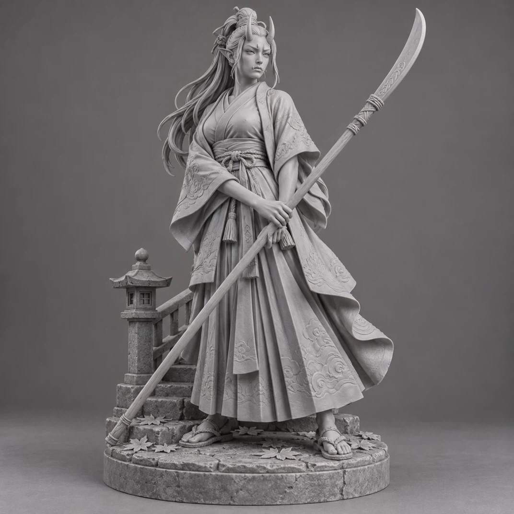
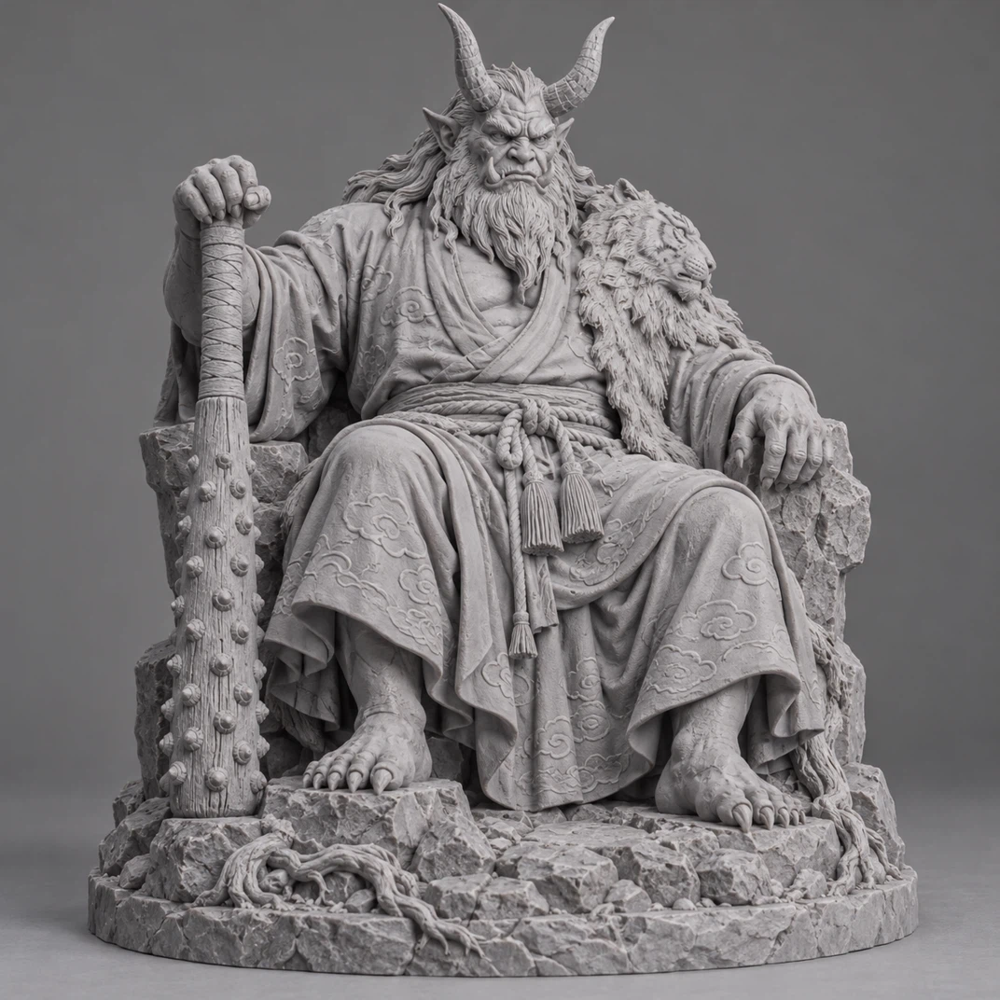

ONI TRADICIONAL
Guardián del kanabō
Sin precio · diseño conceptualVer sus vistas ↗
COLECCIONES / KURO LABS
Oni, resina y tecnología.
Explora nuestra visión del
folclore japonés del futuro.



Diseños conceptuales generados con IA. Portfolio de demostración, sin venta real.
Explorar todas las vistas ↗EL PASADO INSPIRA.
EL FUTURO TOMA FORMA.
ONI TRADICIONAL / 18
Una colección de 18 oni con telas, madera, cuerda y piedra. Fantasía de inspiración japonesa, sin piezas mecánicas.


